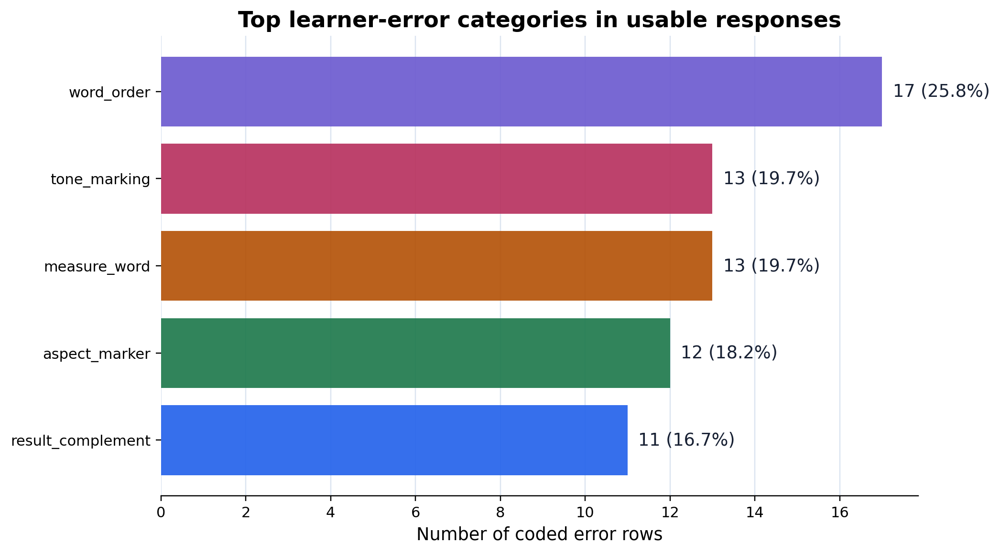
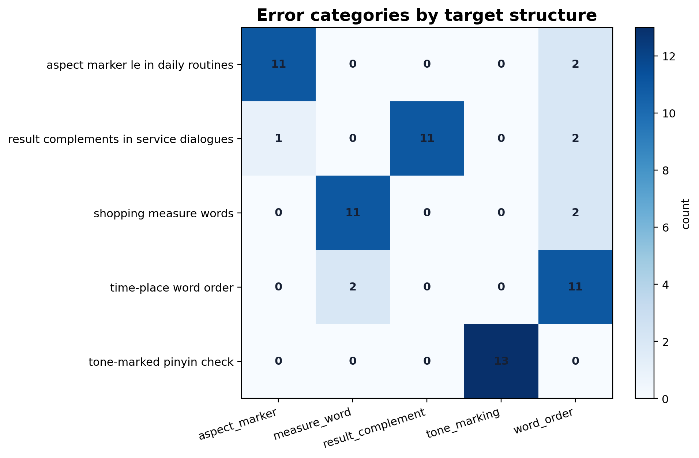

Đọc
Bản HTML giữ code và output cạnh nhau, phù hợp để ôn lại sau buổi học.
Đây là bản HTML đã chạy sẵn để đọc trên GitHub Pages. Muốn thực hành, mở notebook trong Colab hoặc tải file .ipynb.
Bản HTML giữ code và output cạnh nhau, phù hợp để ôn lại sau buổi học.
Nút Colab mở notebook có thể chạy từng cell và tự tải CSV nếu không có file local.
File .ipynb vẫn được giữ để tải, nộp bài hoặc chỉnh trong JupyterLab/VS Code.
Mục tiêu: biến câu trả lời của người học thành bằng chứng có thể đọc được trong paper. Tuần này học cách đếm lỗi, làm bảng chéo theo target structure, chọn ví dụ đại diện và viết một đoạn Results thận trọng.
Cell setup bên dưới chuẩn bị thư viện, kiểm tra file data và tạo folder output. Bạn chỉ cần Run cell này trước; chưa cần hiểu từng dòng.
Week folder, Data file, và SHA-256.python -m pip install -r requirements.txt.from pathlib import Path
from urllib.request import urlretrieve
import hashlib
try:
import pandas as pd
import numpy as np
import matplotlib
matplotlib.use("Agg")
matplotlib.rcParams["svg.hashsalt"] = "week08-learner-error-analysis"
import matplotlib.pyplot as plt
except ImportError as exc:
raise SystemExit(
"Missing package. From the project root, run: "
"python -m pip install -r requirements.txt"
) from exc
THIS_WEEK = "week-08-learner-error-analysis"
EXPECTED_SHA256 = "a96e92a6fa3d746e77e0b6bb97a5ee01bf55f15c6690e23bac0b240feedd6fc0"
def find_week_dir():
candidates = [
Path.cwd(),
Path.cwd() / "weeks" / THIS_WEEK,
Path.cwd().parent,
Path.cwd().parent / "weeks" / THIS_WEEK,
]
for candidate in candidates:
if candidate.name == THIS_WEEK and (candidate / "data/raw").exists():
return candidate
if (candidate / "data/raw/week08_learner_error_coding.csv").exists():
return candidate
raise FileNotFoundError("Cannot find the Week 08 folder. Run this notebook from the project root or the Week 08 folder.")
def sha256_file(path):
return hashlib.sha256(path.read_bytes()).hexdigest()
def strip_svg_whitespace(path):
text = path.read_text(encoding="utf-8")
clean_text = "\n".join(line.rstrip() for line in text.splitlines()) + "\n"
path.write_text(clean_text, encoding="utf-8")
WEEK_DIR = find_week_dir()
DATA_PATH = WEEK_DIR / "data/raw/week08_learner_error_coding.csv"
TABLE_DIR = WEEK_DIR / "outputs/tables"
FIGURE_DIR = WEEK_DIR / "outputs/figures"
TABLE_DIR.mkdir(parents=True, exist_ok=True)
FIGURE_DIR.mkdir(parents=True, exist_ok=True)
if not DATA_PATH.exists():
source = "https://raw.githubusercontent.com/mtuann/tcsol-python-research/main/weeks/week-08-learner-error-analysis/data/raw/week08_learner_error_coding.csv"
print("Local data not found. Downloading synthetic learner-error dataset...")
urlretrieve(source, DATA_PATH)
actual_sha = sha256_file(DATA_PATH)
if actual_sha != EXPECTED_SHA256:
raise ValueError(f"Data hash mismatch. Expected {EXPECTED_SHA256}, got {actual_sha}")
print("Week folder:", f"weeks/{THIS_WEEK}")
print("Data file:", "data/raw/week08_learner_error_coding.csv")
print("SHA-256:", actual_sha)Week folder: weeks/week-08-learner-error-analysis
Data file: data/raw/week08_learner_error_coding.csv
SHA-256: a96e92a6fa3d746e77e0b6bb97a5ee01bf55f15c6690e23bac0b240feedd6fc0Ta dùng một vòng rất ngắn:
``text learner response -> error code -> frequency table -> representative examples -> Results paragraph ``
Câu hỏi mẫu: Trong các câu trả lời dùng được, lỗi nào xuất hiện nhiều nhất và lỗi đó gắn với target structure nào?
Unit of analysis: mỗi dòng là một learner response cho một item. learner_id chỉ là mã định danh.
df = pd.read_csv(DATA_PATH)
usable = df[df["usable_error"] == True].copy()
error_rows = usable[usable["has_error"] == True].copy()
usable["severity"] = pd.to_numeric(usable["severity"], errors="coerce").fillna(0)
error_rows["severity"] = pd.to_numeric(error_rows["severity"], errors="coerce")
print("Raw response rows:", len(df))
print("Usable response rows:", len(usable))
print("Rows with coded errors:", len(error_rows))
print(usable[["response_id", "learner_id", "item_id", "target_structure", "error_category", "severity"]].head(10).to_string(index=False))Raw response rows: 80
Usable response rows: 76
Rows with coded errors: 66
response_id learner_id item_id target_structure error_category severity
R001 L001 I01 result complements in service dialogues result_complement 2.0
R002 L001 I02 shopping measure words measure_word 3.0
R003 L001 I03 aspect marker le in daily routines aspect_marker 1.0
R004 L001 I04 time-place word order word_order 2.0
R005 L001 I05 tone-marked pinyin check tone_marking 2.0
R006 L002 I01 result complements in service dialogues result_complement 3.0
R007 L002 I02 shopping measure words no_error 0.0
R008 L002 I03 aspect marker le in daily routines word_order 2.0
R009 L002 I04 time-place word order word_order 2.0
R010 L002 I05 tone-marked pinyin check tone_marking 1.0Một error code tốt phải giúp giáo viên quyết định nên dạy lại gì. Tuần này không chẩn đoán cá nhân; ta chỉ đọc pattern trong dữ liệu synthetic nhỏ.
| Code | Plain meaning | Teaching use | |---|---|---| | result_complement | thiếu/sai bổ ngữ kết quả | luyện cặp hành động - kết quả như 找 vs 找到 | | measure_word | dùng sai lượng từ | luyện chunks như 一杯茶, 两本书 | | aspect_marker | thiếu/sai vị trí 了 | luyện câu sự kiện đã xảy ra với le | | word_order | đặt time/place sai vị trí | luyện frame subject + place/time + verb | | tone_marking | thiếu/sai thanh điệu pinyin | luyện minimal tone pairs |
Beginner rule: first count codes; then read examples. Do not jump from one example to a big claim.
error_frequency = (
error_rows["error_category"]
.value_counts()
.rename_axis("error_category")
.reset_index(name="n")
)
error_frequency["percent_of_errors"] = (error_frequency["n"] / error_frequency["n"].sum() * 100).round(1)
feature_lookup = error_rows.groupby("error_category")["error_feature"].agg(lambda s: s.mode().iloc[0]).reset_index()
error_frequency = error_frequency.merge(feature_lookup, on="error_category", how="left")
frequency_path = TABLE_DIR / "week08_error_frequency.csv"
error_frequency.to_csv(frequency_path, index=False)
print("Saved:", frequency_path.relative_to(WEEK_DIR))
print(error_frequency.to_string(index=False))Saved: outputs/tables/week08_error_frequency.csv
error_category n percent_of_errors error_feature
word_order 17 25.8 place phrase placed after verb phrase
measure_word 13 19.7 generic 个 used for object classifier
tone_marking 13 19.7 missing or wrong tone mark
aspect_marker 12 18.2 missing or misplaced 了
result_complement 11 16.7 missing or wrong result complementpd.crosstab tạo bảng hai chiều. Ở đây hàng là target_structure, cột là error_category, ô là số lỗi.
Đọc bảng theo câu hỏi: lỗi nào nổi bật trong target nào? Nếu một ô cao, đó là teaching priority candidate, chưa phải bằng chứng nguyên nhân.
error_by_target = pd.crosstab(
error_rows["target_structure"],
error_rows["error_category"]
).reset_index()
crosstab_path = TABLE_DIR / "week08_error_by_target_structure.csv"
error_by_target.to_csv(crosstab_path, index=False)
print("Saved:", crosstab_path.relative_to(WEEK_DIR))
print(error_by_target.to_string(index=False))Saved: outputs/tables/week08_error_by_target_structure.csv
target_structure aspect_marker measure_word result_complement tone_marking word_order
aspect marker le in daily routines 11 0 0 0 2
result complements in service dialogues 1 0 11 0 2
shopping measure words 0 11 0 0 2
time-place word order 0 2 0 0 11
tone-marked pinyin check 0 0 0 13 0Một lỗi xuất hiện nhiều nhưng nhẹ có thể cần xử lý khác với lỗi ít hơn nhưng rất nặng. Ta dùng priority score đơn giản:
``text priority_score = frequency * mean severity ``
Đây là heuristic để viết teaching implication, không phải mô hình thống kê.
teaching_moves = {
"result_complement": "contrast action vs result with short service dialogues",
"measure_word": "teach classifier chunks with shopping objects",
"aspect_marker": "practice 了 placement in completed-event sentences",
"word_order": "drill subject + place/time + verb phrase frames",
"tone_marking": "use minimal tone pairs and written tone-mark checks",
}
priority_table = (
error_rows.groupby("error_category")
.agg(
n=("response_id", "count"),
mean_severity=("severity", "mean"),
target_count=("target_structure", "nunique"),
)
.reset_index()
)
priority_table["mean_severity"] = priority_table["mean_severity"].round(2)
priority_table["priority_score"] = (priority_table["n"] * priority_table["mean_severity"]).round(2)
priority_table["teaching_move"] = priority_table["error_category"].map(teaching_moves)
priority_table = priority_table.sort_values(["priority_score", "n"], ascending=False)
priority_path = TABLE_DIR / "week08_teaching_priority_table.csv"
priority_table.to_csv(priority_path, index=False)
print("Saved:", priority_path.relative_to(WEEK_DIR))
print(priority_table.to_string(index=False))Saved: outputs/tables/week08_teaching_priority_table.csv
error_category n mean_severity target_count priority_score teaching_move
word_order 17 1.88 4 31.96 drill subject + place/time + verb phrase frames
measure_word 13 2.15 2 27.95 teach classifier chunks with shopping objects
tone_marking 13 1.85 1 24.05 use minimal tone pairs and written tone-mark checks
aspect_marker 12 1.83 2 21.96 practice 了 placement in completed-event sentences
result_complement 11 1.91 1 21.01 contrast action vs result with short service dialoguesMột Results paragraph tốt không chỉ nói n. Nó chọn 2-3 ví dụ đại diện để người đọc hiểu lỗi là gì.
Chọn ví dụ theo nguyên tắc:
top_categories = priority_table["error_category"].head(3).tolist()
representative_examples = (
error_rows[error_rows["error_category"].isin(top_categories)]
.sort_values(["error_category", "severity"], ascending=[True, False])
.groupby("error_category")
.head(2)
[["error_category", "target_structure", "prompt_vi", "learner_answer", "expected_answer", "severity", "correction_note"]]
.reset_index(drop=True)
)
examples_path = TABLE_DIR / "week08_representative_examples.csv"
representative_examples.to_csv(examples_path, index=False)
print("Saved:", examples_path.relative_to(WEEK_DIR))
print(representative_examples.to_string(index=False))Saved: outputs/tables/week08_representative_examples.csv
error_category target_structure prompt_vi learner_answer expected_answer severity correction_note
measure_word shopping measure words Nói bằng tiếng Trung: two cups of tea. 两茶。 两杯茶。 3.0 Teach object-specific classifier chunks such as 一杯茶, 两本书, 三张票.
measure_word time-place word order Nói bằng tiếng Trung: I study Chinese at school. 两个票。 我在学校学习汉语。 3.0 Teach object-specific classifier chunks such as yi bei cha, liang ben shu, san zhang piao.
tone_marking tone-marked pinyin check Viết pinyin có thanh điệu cho 马. mà mǎ 3.0 Use minimal tone pairs and require tone marks in written rehearsal.
tone_marking tone-marked pinyin check Viết pinyin có thanh điệu cho 马. mā mǎ 3.0 Use minimal tone pairs and require tone marks in written rehearsal.
word_order result complements in service dialogues Nói bằng tiếng Trung: I found the ticket. 我学习汉语在学校。 我找到票了。 3.0 Practice subject + time/place + verb phrase frames before open production.
word_order time-place word order Nói bằng tiếng Trung: I study Chinese at school. 我学习在学校汉语。 我在学校学习汉语。 3.0 Practice subject + time/place + verb phrase frames before open production.Week 08 xuất hai hình:
Caption phải nói rõ dữ liệu là synthetic, small, và descriptive.
figure_metadata = {"Date": "2026-06-03"}
colors = ["#2563eb", "#1f7a4d", "#b45309", "#b8325f", "#6d5bd0"]
fig, ax = plt.subplots(figsize=(9.6, 5.4))
plot_freq = error_frequency.sort_values("n", ascending=True)
ax.barh(plot_freq["error_category"], plot_freq["n"], color=colors[:len(plot_freq)], alpha=0.92)
for i, row in plot_freq.reset_index(drop=True).iterrows():
ax.text(row["n"] + 0.25, i, f"{int(row['n'])} ({row['percent_of_errors']:.1f}%)", va="center", fontsize=12, color="#172033")
ax.set_xlabel("Number of coded error rows", fontsize=12)
ax.set_title("Top learner-error categories in usable responses", fontsize=15, weight="bold")
ax.grid(axis="x", color="#dbe4f0", linewidth=0.8)
ax.set_axisbelow(True)
for spine in ["top", "right", "left"]:
ax.spines[spine].set_visible(False)
fig.tight_layout()
bar_png = FIGURE_DIR / "week08_error_category_frequency.png"
bar_svg = FIGURE_DIR / "week08_error_category_frequency.svg"
fig.savefig(bar_png, dpi=220, metadata=figure_metadata, bbox_inches="tight")
fig.savefig(bar_svg, format="svg", metadata=figure_metadata, bbox_inches="tight")
strip_svg_whitespace(bar_svg)
plt.close(fig)
heat = pd.crosstab(error_rows["target_structure"], error_rows["error_category"])
fig, ax = plt.subplots(figsize=(10.2, 5.8))
im = ax.imshow(heat.values, cmap="Blues")
ax.set_xticks(np.arange(len(heat.columns)), labels=heat.columns, rotation=18, ha="right")
ax.set_yticks(np.arange(len(heat.index)), labels=heat.index)
for i in range(heat.shape[0]):
for j in range(heat.shape[1]):
value = int(heat.values[i, j])
ax.text(j, i, str(value), ha="center", va="center", color="#172033", fontweight="bold")
ax.set_title("Error categories by target structure", fontsize=15, weight="bold")
fig.colorbar(im, ax=ax, fraction=0.035, pad=0.03, label="count")
fig.tight_layout()
heat_png = FIGURE_DIR / "week08_error_by_target_heatmap.png"
heat_svg = FIGURE_DIR / "week08_error_by_target_heatmap.svg"
fig.savefig(heat_png, dpi=220, metadata=figure_metadata, bbox_inches="tight")
fig.savefig(heat_svg, format="svg", metadata=figure_metadata, bbox_inches="tight")
strip_svg_whitespace(heat_svg)
plt.close(fig)
print("Saved:", bar_png.relative_to(WEEK_DIR))
print("Saved:", heat_png.relative_to(WEEK_DIR))Saved: outputs/figures/week08_error_category_frequency.png
Saved: outputs/figures/week08_error_by_target_heatmap.png

Một đoạn Results tốt trả lời bốn câu:
Không viết “Vietnamese learners always make this error.” Hãy viết “in this small synthetic dataset...”.
top_error = error_frequency.iloc[0]
second_error = error_frequency.iloc[1]
top_priority = priority_table.iloc[0]
results_draft = f"""
In the usable Week 08 learner-response records (N = {len(usable)}), {len(error_rows)} rows contained a coded learner error. The most frequent category was {top_error['error_category']} (n = {int(top_error['n'])}, {top_error['percent_of_errors']}% of coded errors), followed by {second_error['error_category']} (n = {int(second_error['n'])}). The crosstab suggests that {top_error['error_category']} was visible across multiple target structures, not only in one item type. This pattern should be read as teaching evidence rather than as a diagnosis of individual learners. Based on frequency and mean severity, the highest teaching-priority category was {top_priority['error_category']}, so the next short lesson should include sentence-frame practice, guided correction, and representative learner examples. Because the dataset is synthetic and small, the result should guide follow-up teaching design rather than support general claims about broader Vietnamese learners of Chinese.
""".strip()
print(results_draft)
print("\nWord count:", len(results_draft.split()))In the usable Week 08 learner-response records (N = 76), 66 rows contained a coded learner error. The most frequent category was word_order (n = 17, 25.8% of coded errors), followed by measure_word (n = 13). The crosstab suggests that word_order was visible across multiple target structures, not only in one item type. This pattern should be read as teaching evidence rather than as a diagnosis of individual learners. Based on frequency and mean severity, the highest teaching-priority category was word_order, so the next short lesson should include sentence-frame practice, guided correction, and representative learner examples. Because the dataset is synthetic and small, the result should guide follow-up teaching design rather than support general claims about broader Vietnamese learners of Chinese.
Word count: 121week08_error_frequency.csv and identify the top error category.week08_error_by_target_structure.csv and explain one high cell.week08_representative_examples.csv and choose two examples for your Results paragraph.error_rows_stretch = error_rows.copy(), recode one example, and explain why the new code is clearer. Do not edit the raw CSV because the notebook checks SHA-256.